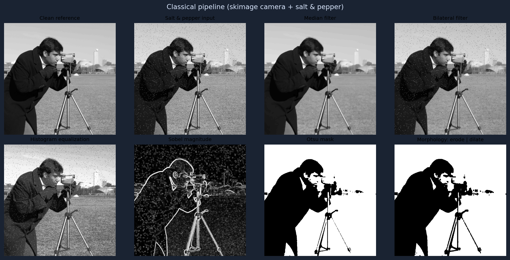
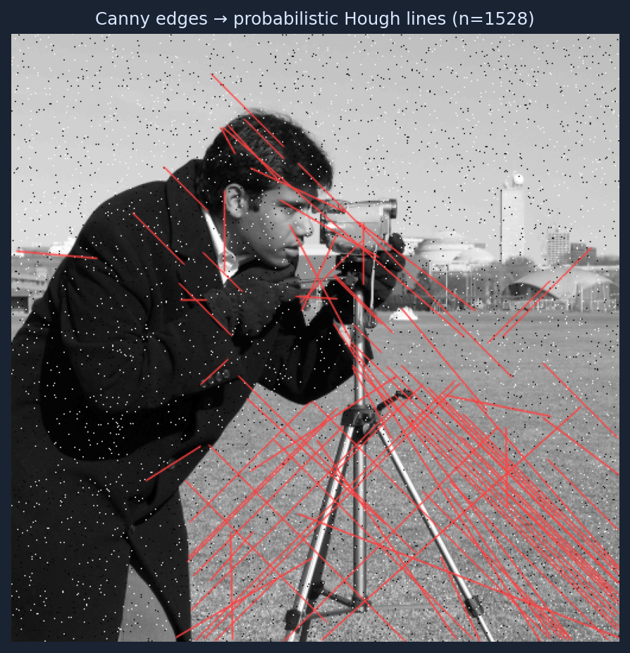
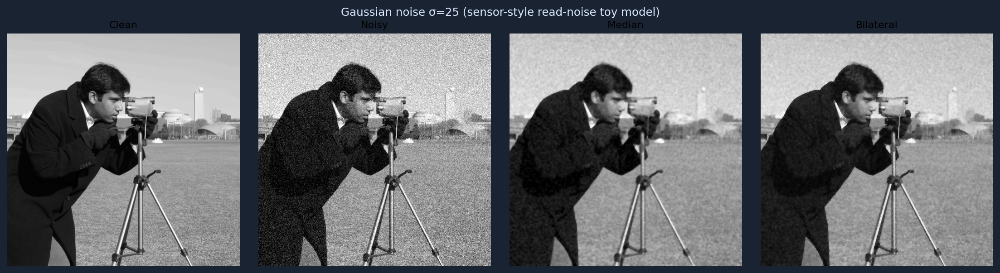
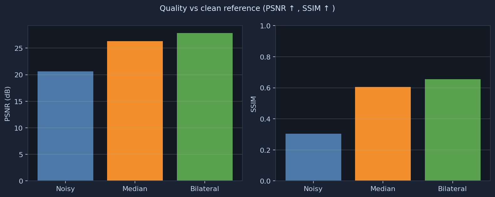

What you are seeing here
GitHub Pages hosts static HTML (this page) plus images. The grids and charts below were generated by
scripts/export_docs_assets.py so visitors immediately see what the code produces.
Training the residual CNN still happens on your machine (or a GPU cloud): export weights with src/train.py, then build the full classical-vs-CNN montage with src/demo.py.
Classical processing montage
Sample image (skimage.data.camera) corrupted with salt-and-pepper noise, then filtered and analyzed.

Line detection (Hough)
Canny edges on the noisy image, then probabilistic Hough segment overlay (OpenCV).

Gaussian noise + classical denoisers
Closer to the CNN training setup: additive Gaussian noise (σ = 25 ), compared against median and bilateral filters.

Objective metrics
PSNR and SSIM versus the clean reference for the Gaussian-noise experiment (same definitions as src/metrics.py).

Overview
Built for roles mixing image processing, computer vision, and deep learning (mobile / automotive sensors, ISP-style pipelines).
Algorithms covered
| Area | Implementation |
|---|---|
| Convolution & smoothing | Gaussian blur, median, bilateral (src/classical.py) |
| Edges | Sobel, Canny |
| Thresholding | Global, adaptive, Otsu |
| Contrast | Histogram equalization |
| Geometry / regions | Morphology, connected components, Hough (probabilistic lines) |
| Resampling | Nearest / bilinear / bicubic resize |
| Deep learning | CNN + BatchNorm + ReLU; residual noise prediction (src/models.py, src/train.py) |
| Data | Patch dataset, augmentations, random noise level (src/dataset.py) |
Repository layout
sensor-cv-algorithm-pipeline/
README.md
requirements.txt
docs/index.html ← this site
docs/assets/ ← figures for Pages (regenerate with scripts/export_docs_assets.py)
scripts/
prepare_data.py
classical_skimage_demo.py
export_docs_assets.py
src/
classical.py
dataset.py
models.py
metrics.py
train.py
demo.py
Environment
python -m venv .venv source .venv/bin/activate pip install torch torchvision --index-url https://download.pytorch.org/whl/cpu pip install -r requirements.txt
Regenerate this website’s figures
python scripts/export_docs_assets.py
Commits PNGs under docs/assets/ so the live site updates on push.
Data & train CNN
python scripts/prepare_data.py --root ./data python -m src.train --data-root ./data --epochs 5 --batch-size 16 --out-dir ./outputs
Full comparison demo (classical + CNN)
python -m src.demo --data-root ./data --weights ./outputs/weights.pt
Writes a multi-panel figure under outputs/demo_compare.png. To showcase that image on the web, copy it into docs/assets/ and link it from docs/index.html, then push.
Classical-only (no PyTorch)
pip install numpy opencv-python-headless scikit-image scipy matplotlib python scripts/classical_skimage_demo.py
True “interactive” inference in the browser
Running arbitrary Python / PyTorch inside GitHub Pages is not supported. For upload-your-image demos, typical options are
Hugging Face Spaces (Gradio / Streamlit),
Streamlit Community Cloud, or a small Flask API on a cloud VM.
This repo is structured so you can wrap src/demo.py logic in Gradio later if you want that experience.
References (related work)
- DnCNN — CNN denoising baseline style.
- End2endImaging — differentiable imaging / pipeline thinking.
- UNet-Image-Denoising — educational PyTorch denoising.
GitHub Pages
Source: branch main, folder /docs. Public URL:
https://edenmalka123.github.io/sensor-cv-algorithm-pipeline/